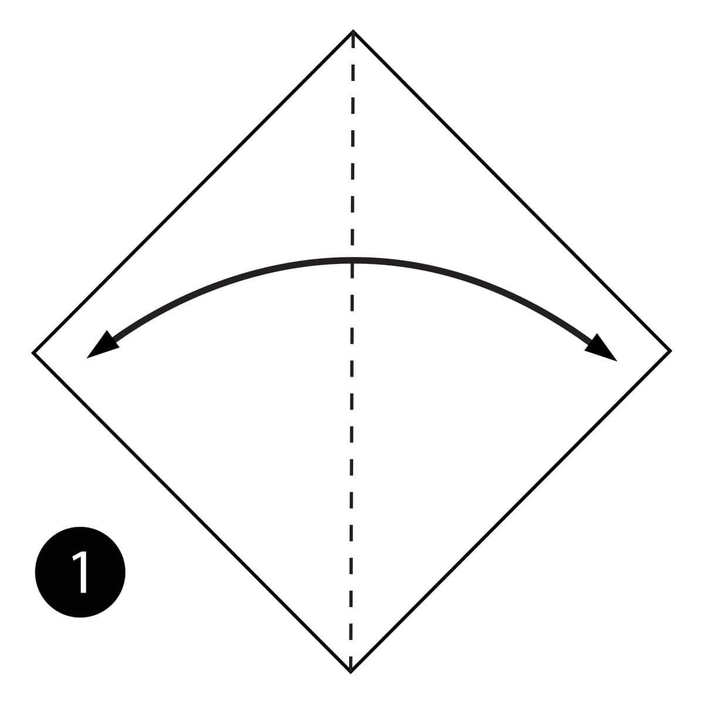
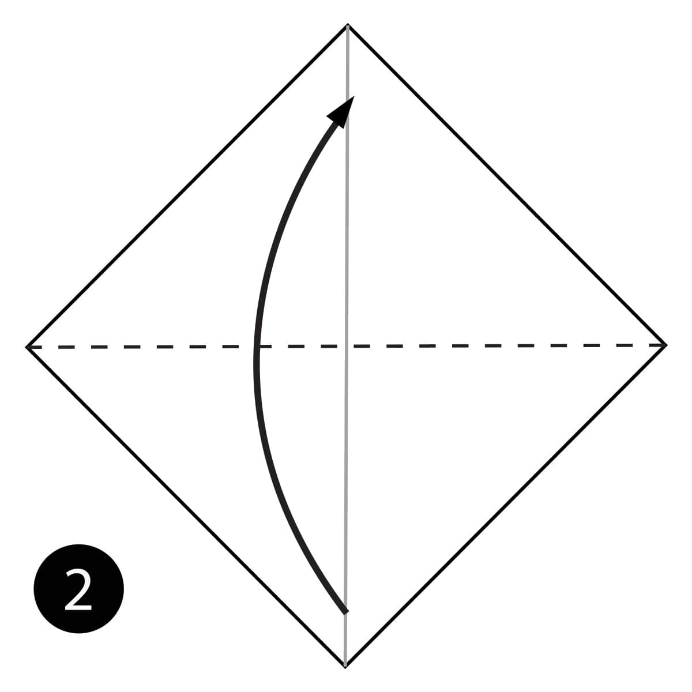
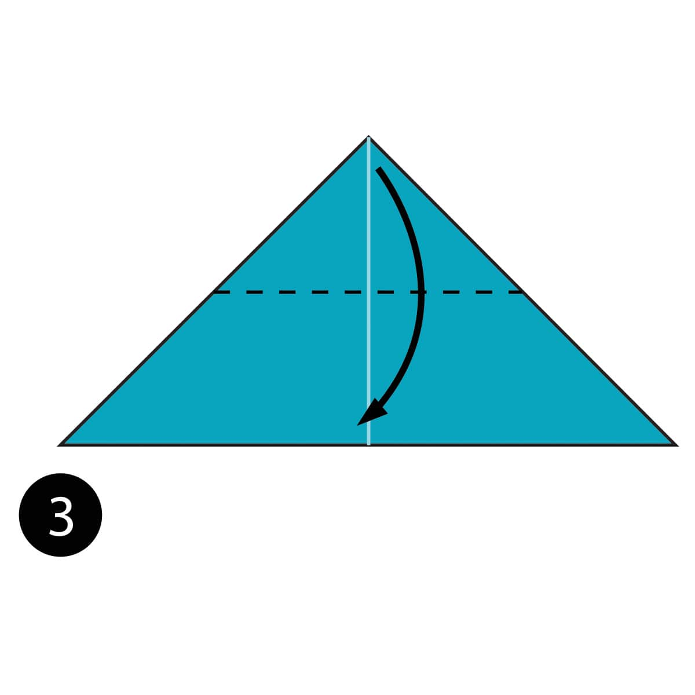
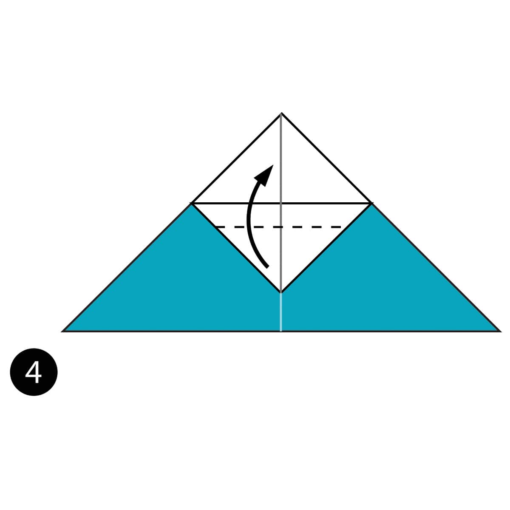
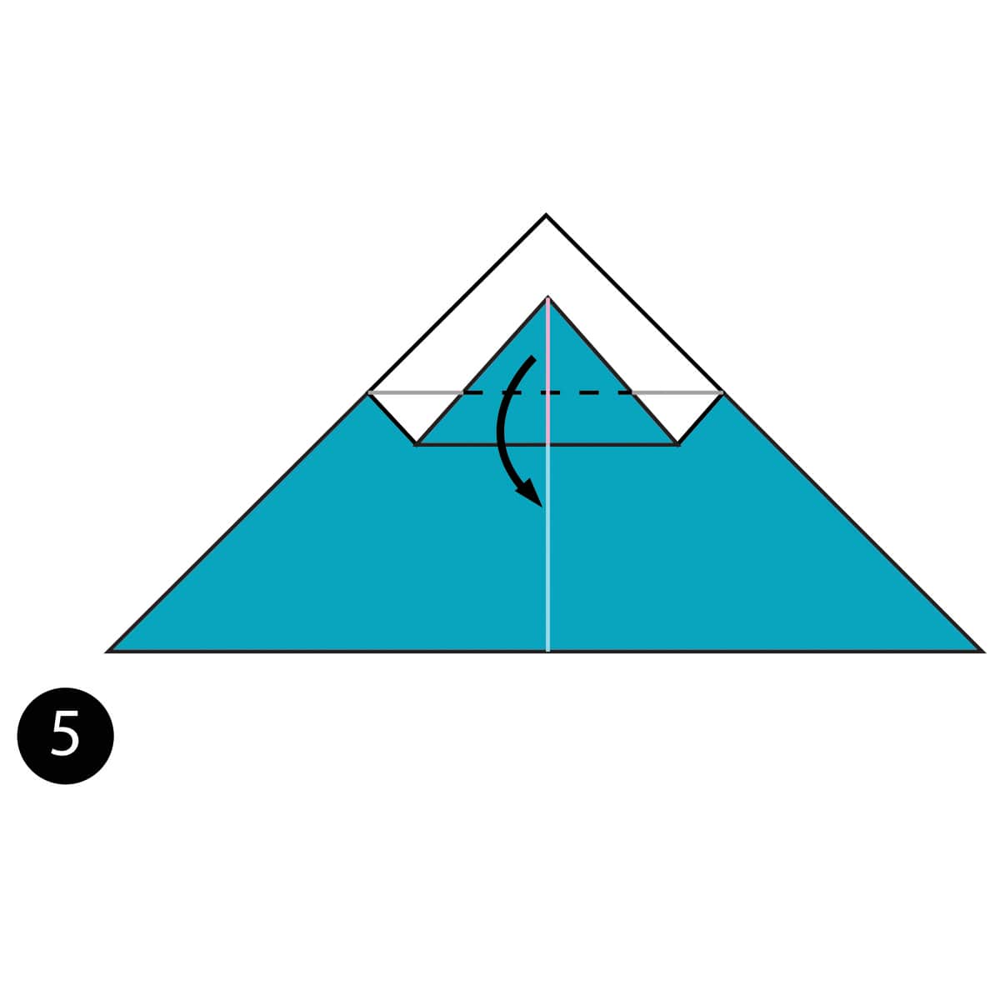
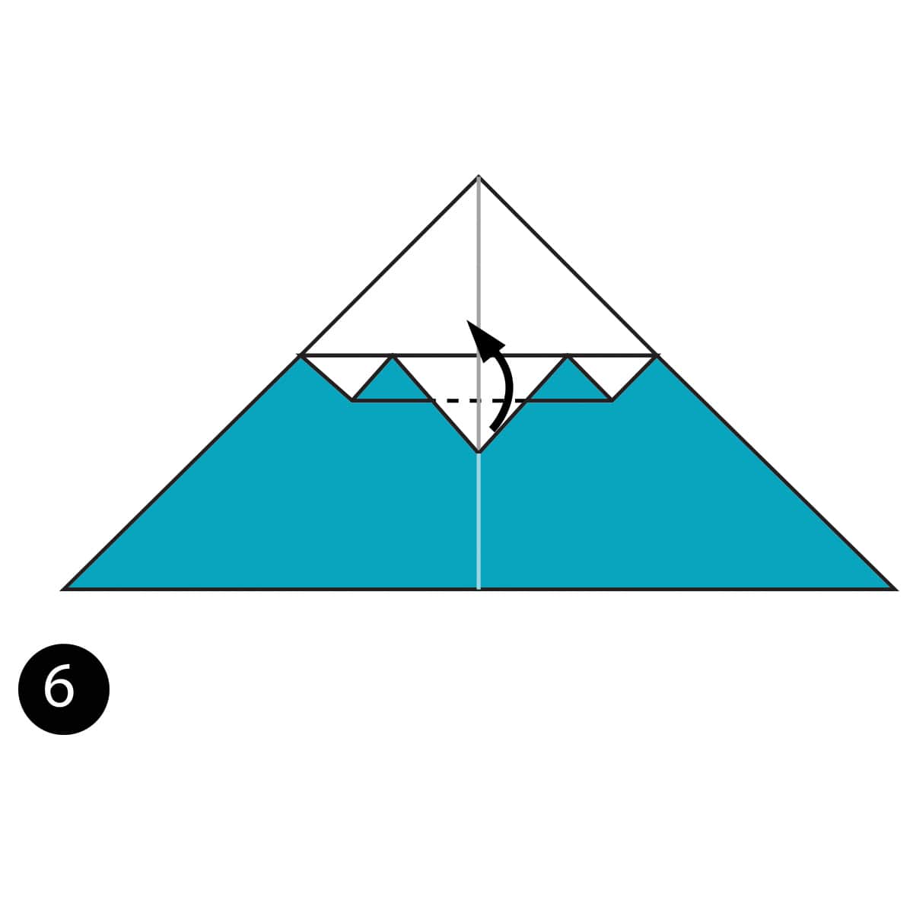
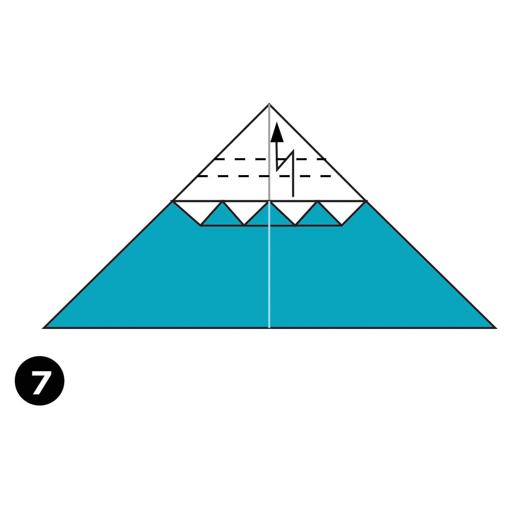
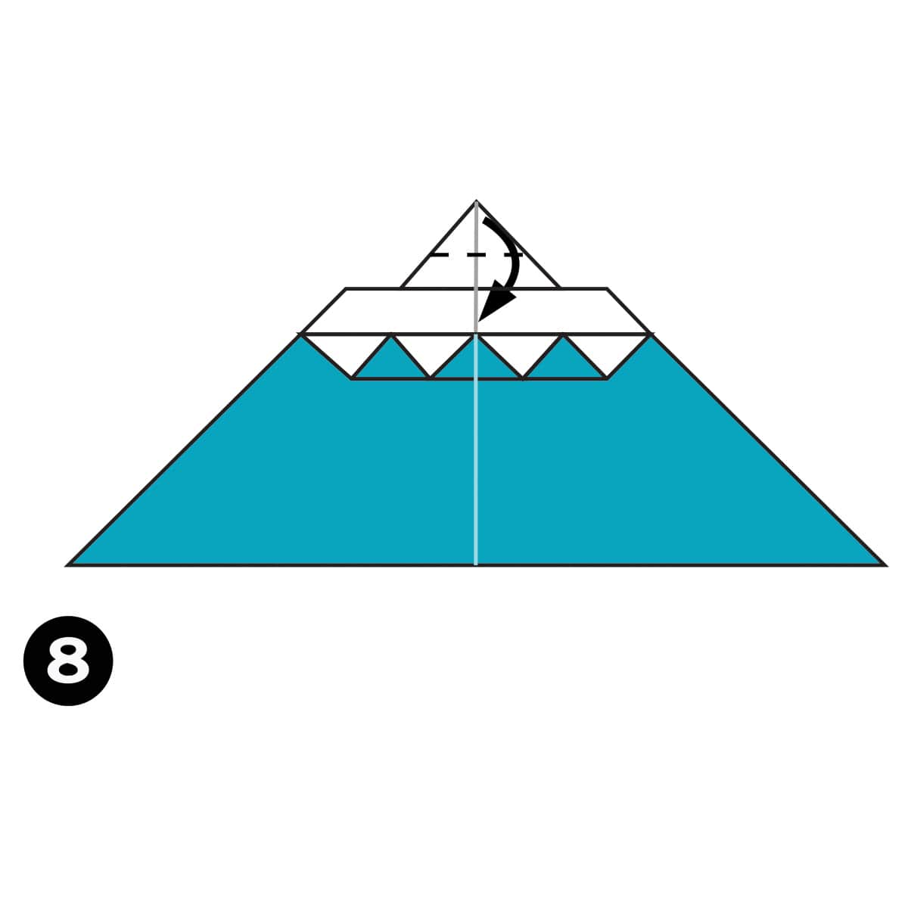
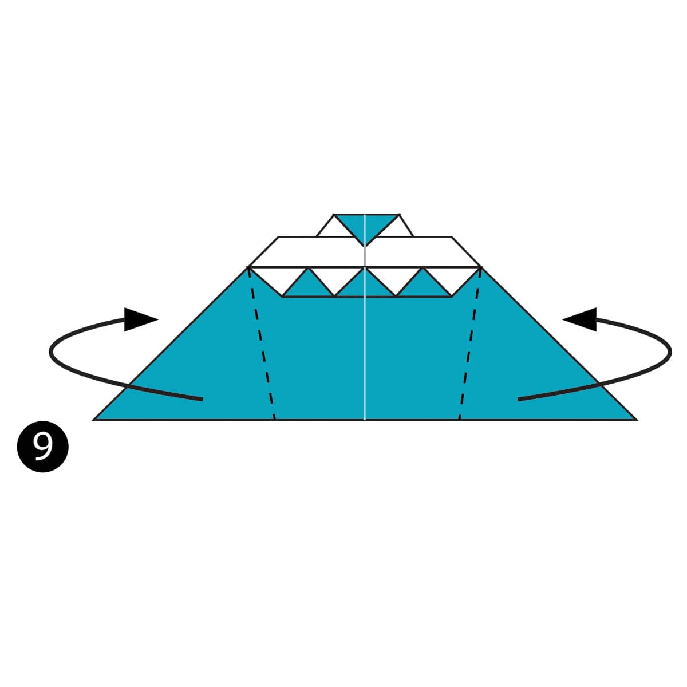
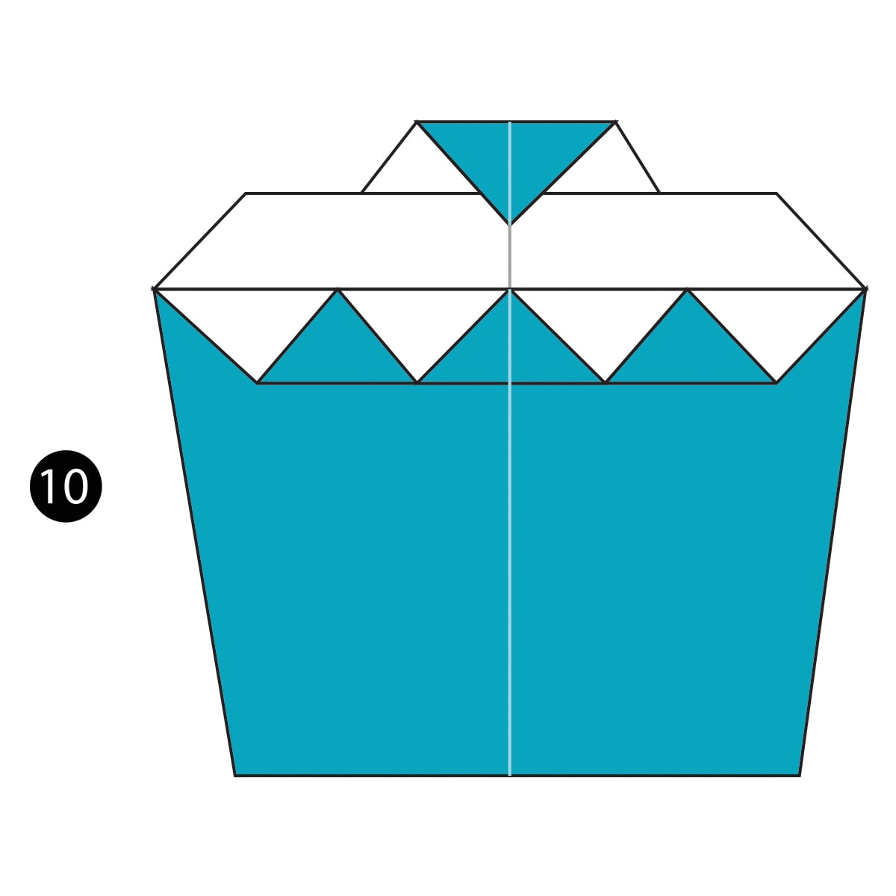

Step 1
Fold the paper in half and then unfold it.

Step 2
Fold the paper in half the other way.

Step 3
Fold the top layer of paper down along the dotted line.

Step 4
Fold that layer of paper back up along the dotted line. This dotted line is about 1/4 of that triangle.

Step 5
Fold the layer of paper down again along the dotted line. This is another 1/4 of this triangle.

Step 6
Fold this top layer of paper up one more time along the dotted line.

Step 7
Make a Pleat Fold along the dotted lines behind the model.

Step 8
Fold the top of the paper down along the dotted line.

Step 9
Fold the sides behind the model along the dotted line.

Completed
The completed cupcake